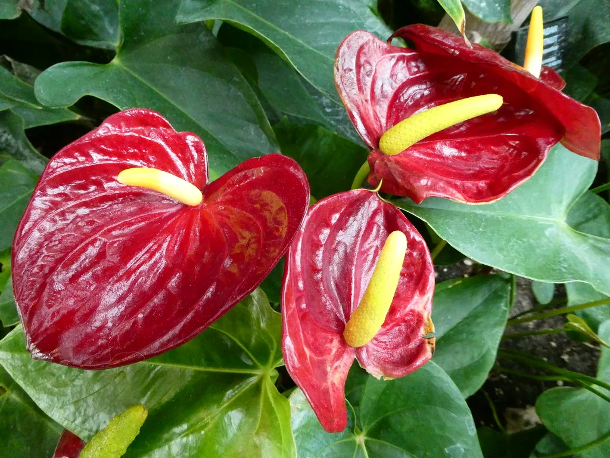
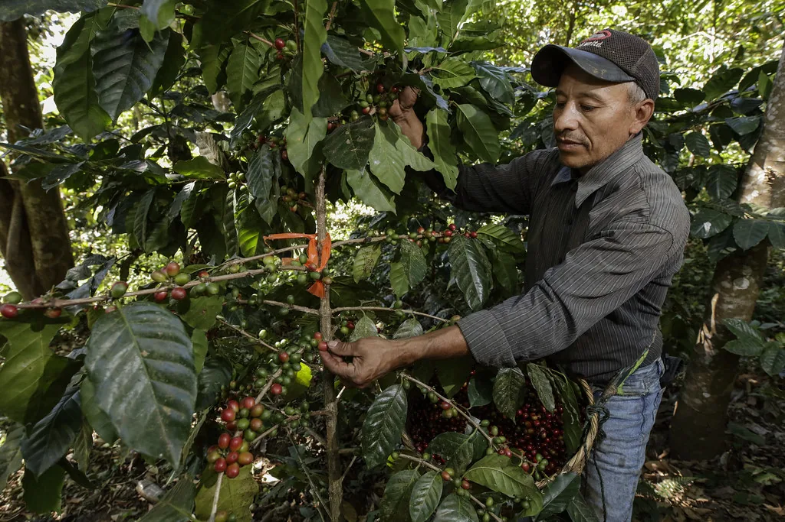

Flowers from Apaneca, on the Ruta de las Flores
A florist on Avenida 15 de Abril Norte, run by Yanira Vásquez. Open every day from early morning.
Plan a bouquetPlan a bouquet
Choose colours, size and the day. Yanira gets your request on WhatsApp and replies with what is in season and the price.

Find the shop
Avenida 15 de Abril Norte, Apaneca, Ahuachapán.
- Monday to Saturday
- 7am – 5pm
- Sunday
- 8am – 4pm
Cash and cards accepted. Call 7604 3429.
Get directions